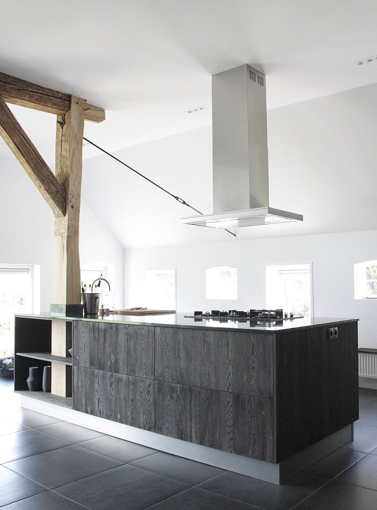
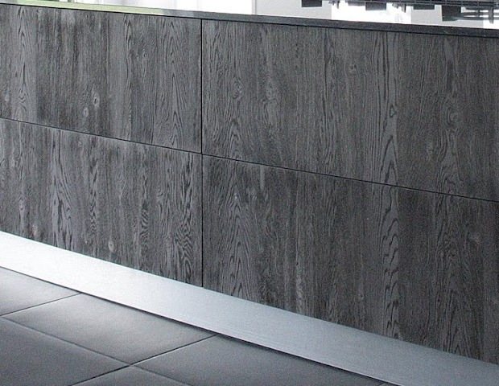
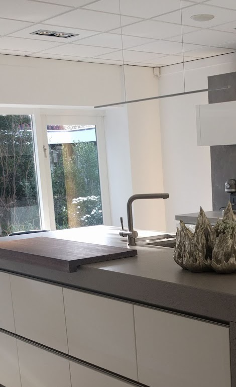

Keukenstudio in Gorssel
Jaren later nog blij.
Uw keuken zoekt u rustig uit in onze showroom. Wij plaatsen hem bij u thuis en blijven daarna voor u klaarstaan, ook als hij al jaren meegaat.
4,8 uit 36 Google-reviews

Van eerste gesprek tot jaren erna.
Bij Stormink houdt het niet op als de keuken staat. U heeft één adres voor het uitzoeken, het plaatsen en alles wat daarna komt.
-
1
Uitzoeken in de showroom
U vertelt wat u wilt en hoe u kookt. Samen komen we tot een keuken die bij uw huis past.
"Na een heel fijn gesprek en het bespreken van de wensen zijn we op een mooie keuken uitgekomen."
-
2
Plaatsen bij u thuis
Wij plaatsen uw keuken bij u thuis, met oog voor de details die u straks elke dag ziet.
"Het hele proces van uitzoeken tot plaatsen verliep bijzonder goed."
-
3
Service, ook jaren later
Een deurtje dat niet meer sluit, een stoomoven die hapert of schade aan het werkblad: u belt gewoon.
"Ook de aftersales is top."
"Nee er komt geen rekening, dat hoort bij de service. Kijk dat vind ik nu echt SERVICE met hoofdletter"


Kom kijken, voelen en vragen.
Een keuken koopt u niet van een plaatje. In de showroom aan de Hoofdstraat ziet u fronten, werkbladen en apparatuur in het echt, en neemt u de tijd voor een goed gesprek.
Openingstijden
- Maandag
- gesloten
- Di t/m vr
- 09:00 tot 17:30
- Zaterdag
- 09:00 tot 13:00
- Zondag
- gesloten
Wat klanten zeggen.
4,8 uit 36 reviews op Google
★★★★★
"Ruim 20 jaar geleden een keuken gekocht bij Stormink. Na zoveel jaar sloot een kastdeurtje niet meer goed. Een monteur verhielp het probleem snel met wat nieuwe onderdelen. Omdat de rekening uitbleef, maar even gebeld. Nee er komt geen rekening, dat hoort bij de service. Kijk dat vind ik nu echt SERVICE met hoofdletter"
★★★★★
"Wij raden Keukenstudio Stormink echt iedereen aan. Onze keuken is inmiddels alweer vier jaar geleden geplaatst en zijn er tot op de dag van vandaag nog steeds ontzettend blij mee.
Ze hebben oog voor detail en hun service is uitstekend. Vier jaar later contact opgenomen in verband met een aantal kleine mankementen en z..."
★★★★★
"Wij hebben hier een Bora Puxu gekocht. Demo open doos. Zeer prettig verlopen. Ook de aftersales is top.👍
Gewoon goede mensen."
★★★★★
"In 2019 bij Stormink geweest voor het uitzoeken van een nieuwe keuken. Na een heel fijn gesprek en het bespreken van de wensen zijn we op een mooie keuken uitgekomen, die niet veel later door Stefan is geplaatst. Na jaren plezier van onze keuken hadden we al enige tijd wat problemen met onze stoomoven. Op moment van he..."
★★★★★
"We zijn meer dan blij met onze mooie keuken van Stormink.
Het hele proces van uitzoeken tot plaatsen verliep bijzonder goed. Daarnaast leveren ze ook nog eens een fantastische service.
Nadat het werkblad door ons eigen toedoen een beschadiging had opgelopen heb ik advies gevraagd door wie we dit konden laten repareren."
Even overleggen?
Over een nieuwe keuken of over de keuken die u al jaren van ons heeft. Bel ons, mail ons of loop binnen.
Bel 0575 491 452- info@stormink.nl
- Showroom
- Hoofdstraat 25, 7213 CN Gorssel